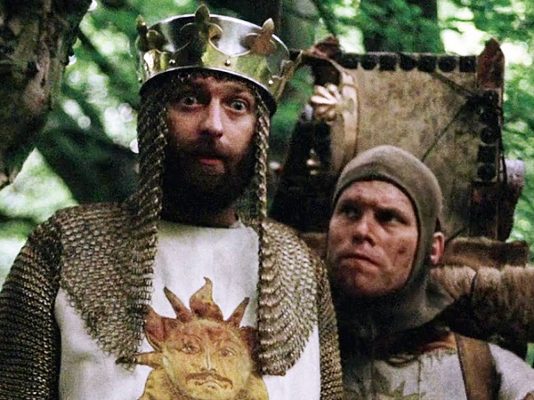

Mijn favoriete film is ''Monty Python and the Holy Grail, zoals te zien is aan de titel. Trouwens ook wel de enige film die ik heb gekeken zo ongeveer, ik heb niks met films.. Als ik een film kijk dan moet er humor in zitten, gelukkig heeft deze film dat meer dan voldoende. Maarja, het is wat je humor noemt.. het is namelijk ontzettend slecht. Like, héél slecht.
anyway, de oorsprong/makers van de film ofzo. nouja, toevallig ben ik geen lopende wikipedia en weet ik dat niet uit mijn hoofd, dus hier een stukje van het internet; Monty Python and the Holy Grail is een komische film uit 1975. De film is geschreven, uitgevoerd en geregisseerd door Monty Python, een Engels/Amerikaanse komediegroep, tussen de derde en laatste serie van de populaire BBC-televisieserie Monty Python's Flying Circus.

klik hier. vooral even doen. is leuk